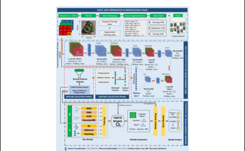

Machine Learning Projects

Dimensionality's Effect on Variance in Scaled Attention
Dimensionality, Variance, Scaled Dot Product, Attention, Transformer
While exploring the minute component of attention, one question that triggered me is why
Researchers incorporated scaling operations.
I observed that as the embedding dimensions increase, the variances also rise, leading to uncontrolled variability, potentially resulting in the vanishing gradient problem. See more
While exploring the minute component of attention, one question that triggered me is why Researchers incorporated scaling operations. I observed that as the embedding dimensions increase, the variances also rise, leading to uncontrolled variability, potentially resulting in the vanishing gradient problem. See more
 ML-DL: A Fusion Learning Approach
Hybrid Learning, Convolutional Neural Network, Random Forest (RF), XGBoost, GaussianNB (GNB), Support Vector Machines (SVM), Multinomial Logistic Regression (MLR), K-Nearest Neighbor (KNN)
See more
See more
Simulation of Fluid Dynamics Using Physics-Inspired Deep Learning
SciML, PINNs, PDE, Differentiable Simulation, Fluid Dynamics
Employing physics-inspired deep learning mechanisms I attempted to simulate fluid dynamics around a rotating object. Such an DL approach aids in solving complex mathematical functions.
See more
Employing physics-inspired deep learning mechanisms I attempted to simulate fluid dynamics around a rotating object. Such an DL approach aids in solving complex mathematical functions. See more